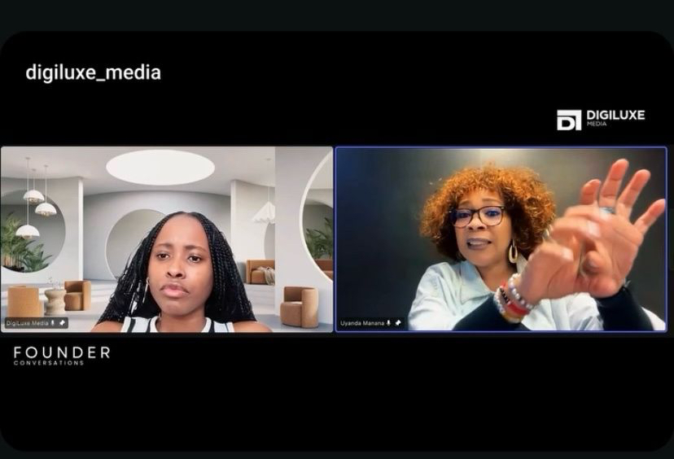
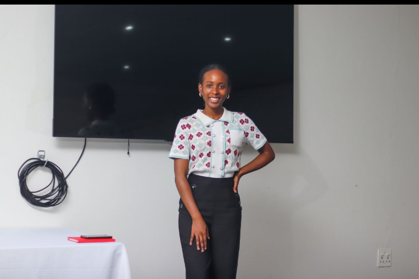

The journey
The decisions, setbacks, turning points and ideas that shape a founder’s path.
Founders Conversations brings us together with visionary founders, business leaders, innovators and industry experts to unpack the stories behind the brands they are building.

Founders Conversations · DigiLuxe MediaThrough authentic conversations, we explore entrepreneurship, leadership, innovation and the lessons shaping the future of business in Africa.
Whether you’re an aspiring entrepreneur, a business owner or simply passionate about growth, these conversations are designed to inspire, educate and empower through practical insights, real-world experiences and perspectives from people building impactful businesses.
The first episode has launched, marking the beginning of a growing platform for honest conversations about the work behind business success.
Collaborate with the series ↗The decisions, setbacks, turning points and ideas that shape a founder’s path.
Leadership practices and insights gained while building teams and organisations.
Ideas, technologies and shifts influencing how business is built across Africa.
Founders Conversations is part of DigiLuxe Media’s wider commitment to strategic storytelling, brand development and business growth. We create a platform for founders and leaders to share what they have learned—and what others can take forward.
We’re interested in conversations that are candid, generous with insight and useful to people building their own path.
Partner with the series ↗